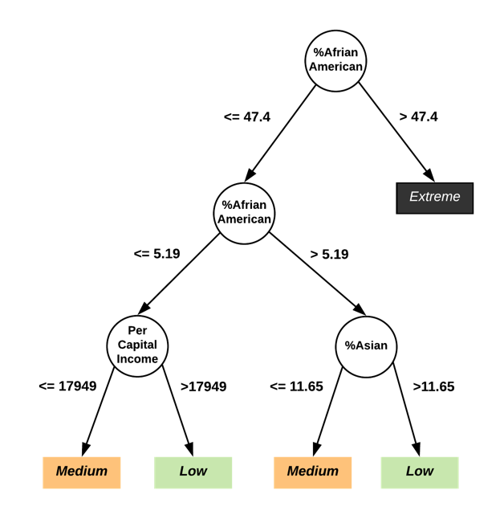
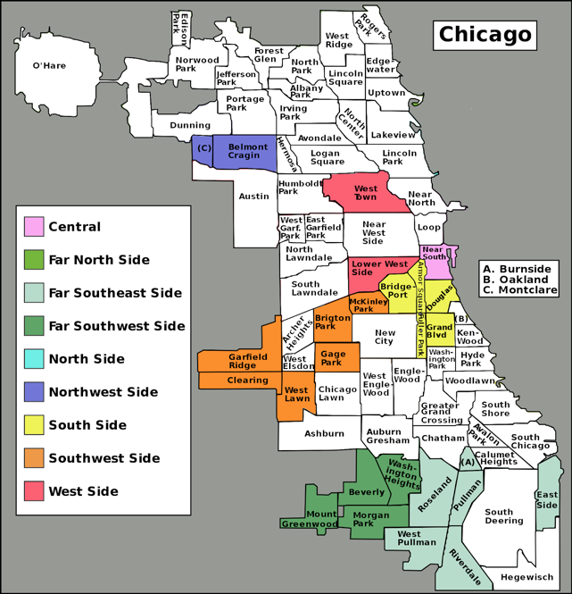
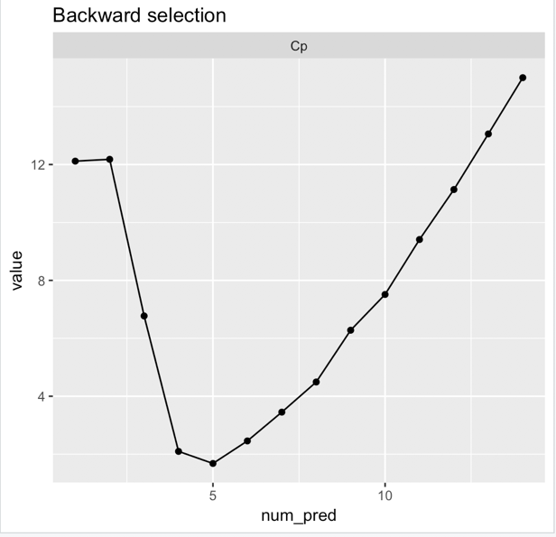
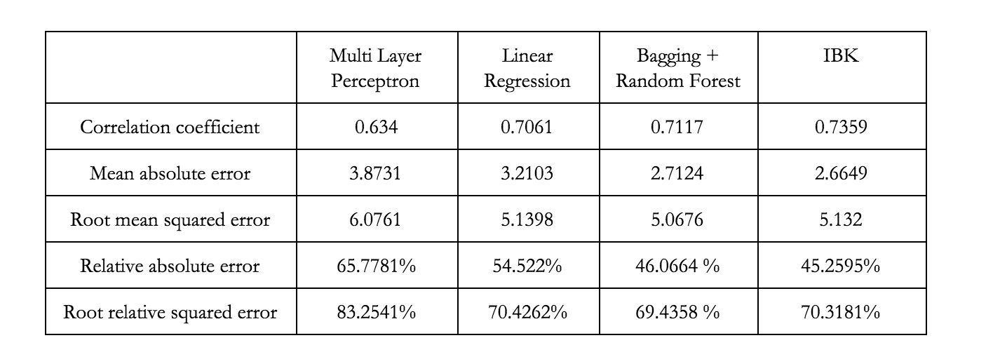

EECS 349: Machine Learning | Northwestern University
"The last copy of the Chicago Daily News I picked up had three crime stories on its front page."
Criminal activities plague societies by disrupting normal social order, incurring high economic costs on the communities, and causing concerns among residents about their safety. As one of the largest cities in the United States, the city of Chicago also has one of the highest crime rates in the nation.
In order to investigate what might be underlying cause of high crime rates of a given Chicago community, we focus on the socio-economic factors since they are good indicators of a community’s health and vitality.
Main Goal: predict whether a Chicago community tend to have higher crime rate given the status of its various socio-economic factors
Attributes: 13 socio-economic factors: % Households below Poverty, Per Captical Income, % Caucasian, and etc. (see report for the full list)
CLASSIFERS
Decision Tree
Logistic Regression
Naive Bayes
SMO
Nearest Neighbor
Best LOOCV ACC
%68.42
%69.73
%68.42
%60.52
%68.42
*** Adding binary attributes: ifSouth, and feature selection reduces overfitting and increases LOOCV accuracy
*** Most Important Features: % African American , % Asian, Per Capital Income, % Aged 16+ Unemployed, ifSouth
ALGORITHMS
Multilayer Perceptron
Linear Regression
Bagging + Random Forest
Nearest Neighbor
--
Best LOOCV MAE
3.87
3.21
2.71
2.66
--
*** Backward Feature Selection with Marrow's Cp as cricriterion reduces overfitting and increases LOOCV accuracy
*** Most Important Features: Hardship , % African American , % Caucasian , % Age Under 18 or Over 64, and ifSouth
Since Chicago only has 77 communities, we can only utilize 77 instances. Feature selection along with techniques such as pruning and bagging are essential, since they reduce overfitting and high dimension.
Key Conclusion: we acknowledge that correlation doesn’t mean causation. We can’t make causal conclusion on what factors might be the underlying cause of high crime rates, but can only say that we observed higher correlation between the selected attributes and crime rates, in the dataset we aggregated.




| No. | Name | Crime Rate | Crowded | Poverty | Unemployed | No HS Diploma | Age under 18 or over 64 | Income | Hardship | SNAP | single mother | %White | %African American | %Asian | %Hispanic | Rank |
|---|---|---|---|---|---|---|---|---|---|---|---|---|---|---|---|---|
| 1 | Rogers Park | 1.675 | 7.7 | 23.6 | 8.7 | 18.2 | 27.5 | 23939 | 39 | 0.18 | 23.9 | 31.77 | 29.56 | 6.47 | 27.78 | medium |
| 2 | West Ridge | 1.098 | 7.8 | 17.2 | 8.8 | 20.8 | 38.5 | 23040 | 46 | 0.16 | 17.55 | 49.73 | 6.78 | 22.38 | 15.51 | low |
| 3 | Uptown | 1.561 | 3.8 | 24 | 8.9 | 11.8 | 22.2 | 35787 | 20 | 0.17 | 21.2 | 42.15 | 21.11 | 12.99 | 19.94 | low |
| 4 | Lincoln Square | 1.049 | 3.4 | 10.9 | 8.2 | 13.4 | 25.5 | 37524 | 17 | 0.07 | 13.02 | 53.21 | 3.01 | 13.33 | 26.54 | low |
| 5 | North Center | 1.204 | 0.3 | 7.5 | 5.2 | 4.5 | 26.2 | 57123 | 6 | 0.03 | 11.21 | 68.78 | 4.18 | 4.19 | 20.37 | low |
| 6 | Lake View | 1.621 | 1.1 | 11.4 | 4.7 | 2.6 | 17 | 60058 | 5 | 0.03 | 9.05 | 79.48 | 4.42 | 5.48 | 8.72 | low |
| 7 | Lincoln Park | 1.556 | 0.8 | 12.3 | 5.1 | 3.6 | 21.5 | 71551 | 2 | 0.04 | 9.29 | 84.49 | 5.17 | 3.65 | 5.06 | low |
| 8 | Near North Side | 3.096 | 1.9 | 12.9 | 7 | 2.5 | 22.6 | 88669 | 1 | 0.05 | 11.11 | 69.22 | 19.07 | 6.15 | 3.85 | medium |
| 9 | Edison Park | 0.574 | 1.1 | 3.3 | 6.5 | 7.4 | 35.3 | 40959 | 8 | 0.01 | 12.34 | 93.29 | 0.17 | 1.78 | 4.11 | low |
| 10 | Norwood Park | 0.779 | 2 | 5.4 | 9 | 11.5 | 39.5 | 32875 | 21 | 0.04 | 15.03 | 88.34 | 0.89 | 3.27 | 6.42 | low |
| 11 | Jefferson Park | 1.09 | 2.7 | 8.6 | 12.4 | 13.4 | 35.5 | 27751 | 25 | 0.05 | 15.01 | 81.6 | 0.31 | 4.82 | 11.14 | low |
| 12 | Forest Glen | 0.66 | 1.1 | 7.5 | 6.8 | 4.9 | 40.5 | 44164 | 11 | 0.04 | 8.26 | 81.44 | 0.39 | 8.75 | 7.65 | low |
| 13 | North Park | 1.169 | 3.9 | 13.2 | 9.9 | 14.4 | 39 | 26576 | 33 | 0.11 | 14.09 | 55.83 | 2.44 | 23.92 | 14.32 | low |
| 14 | Albany Park | 1.02 | 11.3 | 19.2 | 10 | 32.9 | 32 | 21323 | 53 | 0.17 | 16.61 | 27.52 | 3.31 | 17.69 | 46.38 | low |
| 15 | Portage Park | 1.269 | 4.1 | 11.6 | 12.6 | 19.3 | 34 | 24336 | 35 | 0.12 | 23.6 | 69.51 | 0.51 | 3.81 | 22.99 | low |
| 16 | Irving Park | 1.339 | 6.3 | 13.1 | 10 | 22.4 | 31.6 | 27249 | 34 | 0.11 | 19.73 | 44.19 | 1.91 | 7.49 | 43.31 | low |
| 17 | Dunning | 0.914 | 5.2 | 10.6 | 10 | 16.2 | 33.6 | 26282 | 28 | 0.06 | 19.05 | 81.57 | 0.55 | 3.15 | 12.9 | low |
| 18 | Montclaire | 1.234 | 8.1 | 15.3 | 13.8 | 23.5 | 38.6 | 22014 | 50 | 0.14 | 19.53 | 54.5 | 2.09 | 2.69 | 38.47 | low |
| 19 | Belmont Cragin | 1.625 | 10.8 | 18.7 | 14.6 | 37.3 | 37.3 | 15461 | 70 | 0.18 | 25.77 | 28 | 2.56 | 2.56 | 65.11 | low |
| 20 | Hermosa | 1.521 | 6.9 | 20.5 | 13.1 | 41.6 | 36.4 | 15089 | 71 | 0.22 | 25.88 | 11.47 | 2.41 | 1.19 | 83.89 | low |
| 21 | Avondale | 1.518 | 6 | 15.3 | 9.2 | 24.7 | 31 | 20039 | 42 | 0.12 | 23.04 | 29.61 | 1.55 | 2.26 | 61.97 | low |
| 22 | Logan Square | 1.64 | 3.2 | 16.8 | 8.2 | 14.8 | 26.2 | 31908 | 23 | 0.11 | 25.76 | 26.29 | 5.19 | 1.34 | 65.08 | medium |
| 23 | Humboldt park | 3.392 | 14.8 | 33.9 | 17.3 | 35.4 | 38 | 13781 | 85 | 0.36 | 41.6 | 3.32 | 47.4 | 0.4 | 48.01 | medium |
| 24 | West Town | 2.211 | 2.3 | 14.7 | 6.6 | 12.9 | 21.7 | 43198 | 10 | 0.1 | 58.33 | 39.39 | 9.13 | 1.79 | 46.85 | medium |
| 25 | Austin | 11.534 | 6.3 | 28.6 | 22.6 | 24.4 | 37.9 | 15957 | 73 | 0.34 | 50.26 | 4.82 | 89.66 | 0.56 | 4.12 | high |
| 26 | West Garfield Park | 21.267 | 9.4 | 41.7 | 25.8 | 24.5 | 43.6 | 10934 | 92 | 0.43 | 63.99 | 0.58 | 98.02 | 0.08 | 0.87 | extreme |
| 27 | East Garfield Park | 24.646 | 8.2 | 42.4 | 19.6 | 21.3 | 43.2 | 12961 | 83 | 0.47 | 58.68 | 1.13 | 97.2 | 0.14 | 0.99 | extreme |
| 28 | Near West Side | 16.08 | 3.8 | 20.6 | 10.7 | 9.6 | 22.2 | 44689 | 15 | 0.11 | 28.55 | 25.27 | 52.88 | 10.66 | 9.51 | extreme |
| 29 | North Lawndale | 18.608 | 7.4 | 43.1 | 21.2 | 27.6 | 42.7 | 12034 | 87 | 0.48 | 62.52 | 0.92 | 93.77 | 0.14 | 4.54 | extreme |
| 30 | South Lawndale | 5.105 | 15.2 | 30.7 | 15.8 | 54.8 | 33.8 | 10402 | 96 | 0.3 | 24.95 | 3.52 | 12.91 | 0.13 | 83.03 | medium |
| 31 | Lower West Side | 5.991 | 9.6 | 25.8 | 15.8 | 40.7 | 32.6 | 16444 | 76 | 0.23 | 28.71 | 8.15 | 1.76 | 0.29 | 88.9 | medium |
| 32 | Loop | 35.737 | 1.5 | 14.7 | 5.7 | 3.1 | 13.5 | 65526 | 3 | 0.03 | 8.9 | 62.05 | 19.65 | 10 | 5.95 | extreme |
| 33 | Near South Side | 19.428 | 1.3 | 13.8 | 4.9 | 7.4 | 21.8 | 59077 | 7 | 0.08 | 19.32 | 25.17 | 63.64 | 5.48 | 3.96 | extreme |
| 34 | Armour Square | 8.321 | 5.7 | 40.1 | 16.7 | 34.5 | 38.3 | 16148 | 82 | 0.24 | 18.74 | 17.14 | 17 | 60.73 | 3.72 | high |
| 35 | Douglas | 9.056 | 1.8 | 29.6 | 18.2 | 14.3 | 30.7 | 23791 | 47 | 0.23 | 50.01 | 6.59 | 85.51 | 5.29 | 1.11 | high |
| 36 | Oakland | 10.154 | 1.3 | 39.7 | 28.7 | 18.4 | 40.4 | 19252 | 78 | 0.38 | 58.95 | 0.65 | 97.5 | 0.15 | 0.95 | high |
| 37 | Fuller Park | 26.789 | 3.2 | 51.2 | 33.9 | 26.6 | 44.9 | 10432 | 97 | 0.48 | 54.27 | 0.53 | 94.3 | 0.26 | 3.39 | extreme |
| 38 | Grand Boulevard | 12.583 | 3.3 | 29.3 | 24.3 | 15.9 | 39.5 | 23472 | 57 | 0.32 | 57.11 | 0.62 | 97.73 | 0.08 | 0.84 | high |
| 39 | Kenwood | 8.499 | 2.4 | 21.7 | 15.7 | 11.3 | 35.4 | 35911 | 26 | 0.17 | 44 | 15.87 | 75.7 | 4.31 | 1.64 | high |
| 40 | Washington Park | 20.235 | 5.6 | 42.1 | 28.6 | 25.4 | 42.8 | 13785 | 88 | 0.51 | 69.75 | 0.52 | 97.54 | 0.06 | 0.95 | extreme |
| 41 | Hyde Park | 5.097 | 1.5 | 18.4 | 8.4 | 4.3 | 26.2 | 39056 | 14 | 0.08 | 25.25 | 43.52 | 37.73 | 11.3 | 4.11 | medium |
| 42 | Woodlawn | 17.345 | 2.9 | 30.7 | 23.4 | 16.5 | 36.1 | 18672 | 58 | 0.31 | 57.28 | 2.81 | 94.21 | 0.78 | 1.06 | extreme |
| 43 | South Shore | 15.035 | 2.8 | 31.1 | 20 | 14 | 35.7 | 19398 | 55 | 0.33 | 58.13 | 1.14 | 96.51 | 0.16 | 1.03 | extreme |
| 44 | Chatham | 15.8 | 3.3 | 27.8 | 24 | 14.5 | 40.3 | 18881 | 60 | 0.3 | 55.7 | 0.32 | 98.02 | 0.12 | 0.59 | extreme |
| 45 | Avalon Park | 13.053 | 1.4 | 17.2 | 21.1 | 10.6 | 39.3 | 24454 | 41 | 0.27 | 42.66 | 0.86 | 97.03 | 0.18 | 0.76 | extreme |
| 46 | South Chicago | 13.643 | 4.7 | 29.8 | 19.7 | 26.6 | 41.1 | 16579 | 75 | 0.32 | 41.8 | 2.94 | 68.02 | 0.15 | 27.37 | extreme |
| 47 | Burnside | 13.139 | 6.8 | 33 | 18.6 | 19.3 | 42.7 | 12515 | 79 | 0.36 | 43.24 | 1.21 | 96.54 | 0.21 | 1.03 | extreme |
| 48 | Calumet Heights | 9.44 | 2.1 | 11.5 | 20 | 11 | 44 | 28887 | 38 | 0.16 | 42.01 | 1.29 | 92.76 | 0.24 | 4.68 | high |
| 49 | Roseland | 14.87 | 2.5 | 19.8 | 20.3 | 16.9 | 41.2 | 17949 | 52 | 0.27 | 47.98 | 0.52 | 97.81 | 0.07 | 0.69 | extreme |
| 50 | Pullman | 11.786 | 1.5 | 21.6 | 22.8 | 13.1 | 38.6 | 20588 | 51 | 0.26 | 53.12 | 8.49 | 81.4 | 0.17 | 8.91 | high |
| 51 | South Deering | 10.792 | 4 | 29.2 | 16.3 | 21 | 39.5 | 14685 | 65 | 0.24 | 45.27 | 7.58 | 60.83 | 0.05 | 30.46 | high |
| 52 | East Side | 6.047 | 6.8 | 19.2 | 12.1 | 31.9 | 42.8 | 17104 | 64 | 0.16 | 25.35 | 29.39 | 1.02 | 0.25 | 68.12 | medium |
| 53 | West Pullman | 12.721 | 3.3 | 25.9 | 19.4 | 20.5 | 42.1 | 16563 | 62 | 0.3 | 47.57 | 0.89 | 93.53 | 0.05 | 4.64 | extreme |
| 54 | Riverdale | 10.69 | 5.8 | 56.5 | 34.6 | 27.5 | 51.5 | 8201 | 98 | 0.66 | 69.45 | 0.67 | 96.64 | 0.1 | 1.63 | high |
| 55 | Hegewisch | 6.143 | 3.3 | 17.1 | 9.6 | 19.2 | 42.9 | 22677 | 44 | 0.13 | 25.32 | 67 | 1.33 | 0.35 | 28.83 | medium |
| 56 | Garfield Ridge | 6.091 | 2.6 | 8.8 | 11.3 | 19.3 | 38.1 | 26353 | 32 | 0.08 | 16.38 | 68.91 | 12.24 | 0.94 | 16.48 | medium |
| 57 | Archer Heights | 8.371 | 8.5 | 14.1 | 16.5 | 35.9 | 39.2 | 16134 | 67 | 0.17 | 20.92 | 53.4 | 0.59 | 0.43 | 43.38 | high |
| 58 | Brighton Park | 5.997 | 14.4 | 23.6 | 13.9 | 45.1 | 39.3 | 13089 | 84 | 0.23 | 20.53 | 18.48 | 0.49 | 2.88 | 76.61 | medium |
| 59 | McKinley Park | 7.304 | 7.2 | 18.7 | 13.4 | 32.9 | 35.6 | 16954 | 61 | 0.16 | 21.97 | 28.86 | 0.73 | 7.59 | 61.51 | high |
| 60 | Bridgeport | 5.321 | 4.5 | 18.9 | 13.7 | 22.2 | 31.3 | 22694 | 43 | 0.13 | 22.08 | 41.01 | 1.05 | 26.16 | 30.17 | medium |
| 61 | New City | 11.156 | 11.9 | 29 | 23 | 41.5 | 38.9 | 12765 | 91 | 0.37 | 29.19 | 13.13 | 35.29 | 0.3 | 50.17 | high |
| 62 | West Elsdon | 6.982 | 11.1 | 15.6 | 16.7 | 37 | 37.7 | 15754 | 69 | 0.18 | 21.45 | 46.86 | 0.46 | 0.86 | 49.46 | high |
| 63 | Gage Park | 6.916 | 15.8 | 23.4 | 18.2 | 51.5 | 38.8 | 12171 | 93 | 0.26 | 18.56 | 12.28 | 7 | 0.42 | 79.3 | medium |
| 64 | Clearing | 5.127 | 2.7 | 8.9 | 9.5 | 18.8 | 37.6 | 25113 | 29 | 0.08 | 20.65 | 76.34 | 0.61 | 0.69 | 20.99 | medium |
| 65 | West Lawn | 7.28 | 5.8 | 14.9 | 9.6 | 33.6 | 39.6 | 16907 | 56 | 0.1 | 19.26 | 42.89 | 2.6 | 0.94 | 51.92 | high |
| 66 | Chicago Lawn | 11.993 | 7.6 | 27.9 | 17.1 | 31.2 | 40.6 | 13231 | 80 | 0.26 | 41.45 | 10.08 | 52.5 | 0.65 | 35.06 | high |
| 67 | West Englewood | 18.503 | 4.8 | 34.4 | 35.9 | 26.3 | 40.7 | 11317 | 89 | 0.41 | 54.86 | 0.36 | 97.77 | 0.07 | 1.01 | extreme |
| 68 | Englewood | 19.198 | 3.8 | 46.6 | 28 | 28.5 | 42.5 | 11888 | 94 | 0.42 | 63.63 | 0.44 | 97.84 | 0.08 | 0.86 | extreme |
| 69 | Greater Grand Crossing | 17.953 | 3.6 | 29.6 | 23 | 16.5 | 41 | 17285 | 66 | 0.32 | 60.78 | 0.38 | 97.82 | 0.08 | 0.71 | extreme |
| 70 | Ashburn | 6.595 | 4 | 10.4 | 11.7 | 17.7 | 36.9 | 23482 | 37 | 0.11 | 26.6 | 36.75 | 43.06 | 1.03 | 16.86 | medium |
| 71 | Auburn Gresham | 14.551 | 4 | 27.6 | 28.3 | 18.5 | 41.9 | 15528 | 74 | 0.34 | 57.05 | 0.42 | 98.09 | 0.08 | 0.62 | extreme |
| 72 | Beverly | 4.574 | 0.9 | 5.1 | 8 | 3.7 | 40.5 | 39523 | 12 | 0.04 | 16.24 | 62.81 | 31.86 | 0.57 | 2.92 | medium |
| 73 | Washington Height | 11.098 | 1.1 | 16.9 | 20.8 | 13.7 | 42.6 | 19713 | 48 | 0.21 | 46.66 | 0.65 | 97.54 | 0.06 | 0.77 | high |
| 74 | Mount Greenwood | 3.317 | 1 | 3.4 | 8.7 | 4.3 | 36.8 | 34381 | 16 | 0.02 | 11.64 | 91 | 3.57 | 0.36 | 3.84 | medium |
| 75 | Morgan Park | 9.142 | 0.8 | 13.2 | 15 | 10.8 | 40.3 | 27149 | 30 | 0.16 | 33.69 | 29.77 | 66.66 | 0.34 | 2.11 | high |
| 76 | OHare | 12.16 | 3.6 | 15.4 | 7.1 | 10.9 | 30.3 | 25828 | 24 | 0.04 | 13.3 | 81.64 | 2.12 | 7.35 | 6.39 | high |
| 77 | Edgewater | 4.276 | 4.1 | 18.2 | 9.2 | 9.7 | 23.8 | 33385 | 19 | 0.09 | 18.42 | 47.88 | 16.98 | 11.65 | 19.58 | medium |